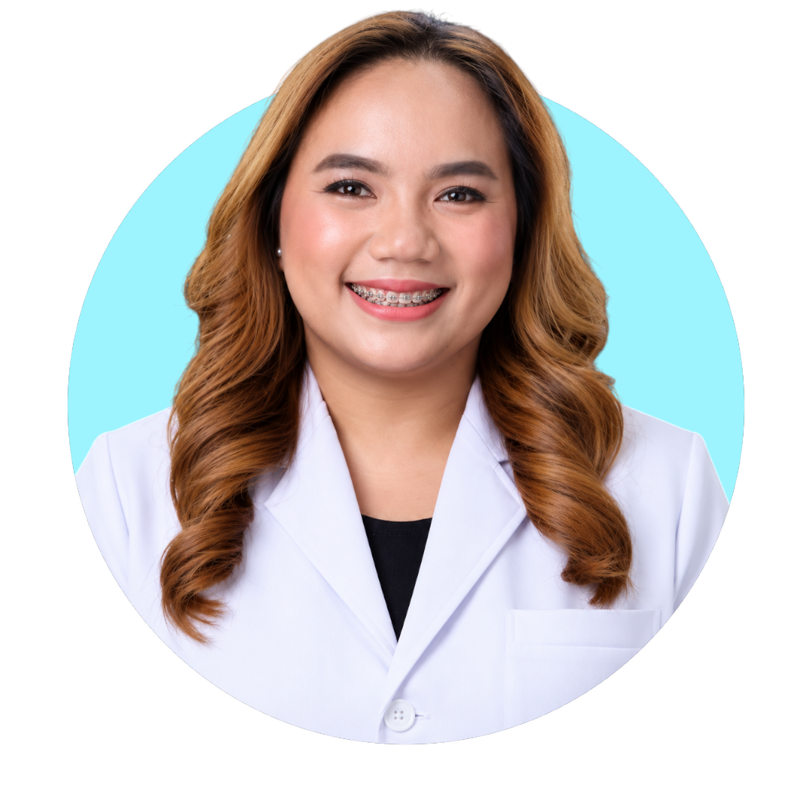
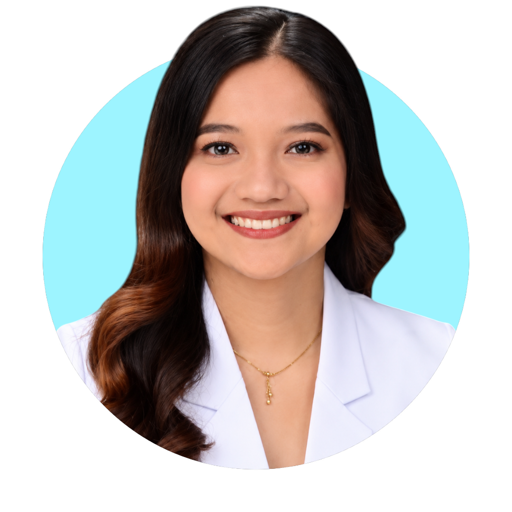

Chipped Front Tooth Repair with Composite Bonding
At KZipagan Dental Care in Tuguegarao City, Cagayan, tooth-colored composite bonding rebuilt chipped front teeth and restored a natural-looking smile.
WELCOME TO DENTECARE
We use only the best quality materials on the market in order to provide the best products for our patients. So don’t worry about anything and book yourself.
We are able to restore your dental health issue
Explore a selection of our dental treatments, carefully designed to create healthier, brighter, and more confident smiles.
At KZipagan Dental Care in Tuguegarao City, Cagayan, tooth-colored composite bonding rebuilt chipped front teeth and restored a natural-looking smile.
At our Tuguegarao City, Cagayan dental clinic, braces were placed to gradually guide crowded teeth into better alignment for a healthier bite.
In Tuguegarao City, Cagayan, damaged areas were cleaned and restored with natural-looking composite fillings to protect the teeth and improve the smile.
A professional dental cleaning in Tuguegarao City, Cagayan removed surface buildup and stains to support healthier gums and a fresher smile.
At our Tuguegarao City, Cagayan clinic, direct composite bonding repaired chipped front teeth and blended the restoration with the natural tooth color.
In Tuguegarao City, Cagayan, a custom tooth-replacement solution restored missing front teeth, improving smile appearance and everyday confidence.
From preventive dental care to smile-restoring treatments, our Tuguegarao City, Cagayan dental team provides personalized services for healthier, more confident smiles.
Replace several missing teeth with a removable, natural-looking solution for everyday comfort.
Learn More →Safe, gentle removal of a damaged or problematic tooth when it cannot be saved.
Learn More →Repair cavities and minor tooth damage with durable, tooth-colored dental fillings.
Learn More →Professional teeth cleaning removes plaque and tartar to support healthy gums.
Learn More →Orthodontic braces help straighten teeth and improve your bite over time.
Learn More →Brighten your smile with professional teeth whitening tailored to your goals.
Learn More →Reshape excess gum tissue to support gum health and create a more balanced smile.
Learn More →Restore a full smile with custom dentures designed for fit, function, and confidence.
Learn More →Surgical removal of impacted teeth, including wisdom teeth, with attentive aftercare.
Learn More →Strengthen tooth enamel and help prevent cavities with a protective fluoride treatment.
Learn More →Protect deep grooves in molars from decay with a preventive dental sealant.
Learn More →Maintain your teeth alignment after braces with a custom-fit orthodontic retainer.
Learn More →
Replace missing teeth with a fixed dental bridge that restores chewing and smile appearance.
Learn More →Get to know the caring dental professionals at KZipagan Dental Care in Tuguegarao City, Cagayan—dedicated to clear guidance, gentle treatment, and confident smiles.
General, Orthodontic & Esthetic Dentist
Availability Saturdays–Sundays, 9:00 AM–3:00 PM
By appointment

General Dentist
Availability Mondays–Sundays, 9:00 AM–4:00 PM
By appointment

General Dentist
Availability Mondays–Sundays, 9:00 AM–4:00 PM
By appointment